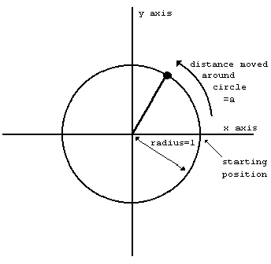
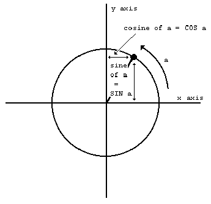

↑, PI, EXP, LN, SIN, COS, TAN, ASN, ACS, ATN
This chapter deals with the mathematics that the ZX Spectrum can handle. Quite possibly you will never have to use any of this at all, so if you find it too heavy going, don't be afraid of skipping it. It covers the operation ↑ (raising to a power), the functions EXP and LN, and the trigonometrical functions SIN, COS, TAN and their inverses ASN, ACS, and ATN.
↑ and EXP
You can raise one number to the power of another - that means 'multiply the first number by itself the second number of times'. This is normally shown by writing the second number just above and to the right of the first number; but obviously this would be difficult on a computer so we use the symbol ↑ instead. For example, the powers of 2 are
2↑1=2 2↑2=2*2=4 (2 squared) 2↑3=2*2*2=8 (2 cubed) 2↑4=2*2*2*2=16 (2 to the power four)
Thus at its most elementary level, 'a↑b' means 'a multiplied by itself b times', but obviously this only makes sense if b is a positive whole number. To find a definition that works for other values of b, we consider the rule
a↑(b+c) = a↑b*a↑c
(Notice that we give ↑ a higher priority than * and / so that when there are several operations in one expression, the ↑'s are evaluated before the *s and /s.) You should not need much convincing that this works when b and c are both positive whole numbers; but if we decide that we want it to work even when they are not, then we find ourselves compelled to accept that
a↑0 = 1 a↑(-b) = 1/a↑b a↑(1/b) = the bth root of a, which is to say, the number that you have to multiply by itself b times to get a and a↑(b*c)=(a↑b)↑c
If you have never seen any of this before then don't try to remember it straight away; just remember that
a↑(-1)=1/a and a↑(1/2)=SQR a
and maybe when you are familiar with these the rest will begin to make sense.
Experiment with all this by trying this program:
10 INPUT a,b,c
20 PRINT a↑(b+c),a↑b*a↑c
30 GO TO 10
Of course, if the rule we gave earlier is true, then each time round the two numbers that the computer prints out will be equal. (Note - because of the way the computer works out ↑, the number on the left - a in this case - must never be negative.)
A rather typical example of what this function can be used for is that of compound interest. Suppose you keep some of your money in a building society and they give 15% interest per year. Then after one year you will have not just the 100% that you had anyway, but also the 15% interest that the building society have given you, making altogether 115% of what you had originally. To put it another way, you have multiplied your sum of money by 1.15, and this is true however much you had there in the first place. After another year, the same will have happened again, so that you will then have 1.15*1.15=1.15↑2=1.3225 times your original sum of money. In general, after y years, you will have 1.15↑y times what you started out with.
If you try this command
FOR y=0 TO 198: PRINT y,10*1.15↑y:NEXT y
you will see that even starting off from just £10, it all mounts up quite quickly, and what is more, it gets faster and faster as time goes on. (Although even so, you might still find that it doesn't keep up with inflation.)
This sort of behaviour, where after a fixed interval of time some quantity multiplies itself by a fixed proportion, is called exponential growth, and it is calculated by raising a fixed number to the power of the time.
Suppose you did this:
10 DEF FN a(x)=a↑x
Here, a is more or less fixed, by LET statements: its value will correspond to the interest rate, which changes only every so often.
There is a certain value for a that makes the function FN a look especially pretty to the trained eye of a mathematician: and this value is called e. The ZX Spectrum has a function called EXP defined by
EXP x=e↑x
Unfortunately, e itself is not an especially pretty number: it is an infinite non-recurring decimal. You can see its first few decimal places by doing
PRINT EXP 1
because EXP 1 = e↑1 = e. Of course, this is just an approximation. You can never write down e exactly.
LN
The inverse of an exponential function is a logarithmic function: the logarithm (to base a) of a number x is the power to which you have to raise a to get the number x, and it is written logax. Thus by definition a↑logax=x; and it is also true that log (a↑x)=x.
You may well already know how to use base 10 logarithms for doing multiplications; these are called common logarithms. The ZX Spectrum has a function LN which calculates logarithms to the base e; these are called natural logarithms. To calculate logarithms to any other base, you must divide the natural logarithm by the natural logarithm of the base:
logax = LN x/ LN a
PI
Given any circle, you can find its perimeter (the distance round its edge; often called its circumference) by multiplying its diameter (width) by a number called π. (π is a Greek p, and it is used because it stands for perimeter. Its name is pi.)
Like e, π is an infinite non-recurring decimal; it starts off as 3.141592653589....The word PI on the Spectrum (extended mode, then M) is taken as standing for this number - try PRINT PI.
SIN, COS and TAN; ASN, ACS and ATN
The trigonometrical functions measure what happens when a point moves round a circle. Here is a circle of radius 1 (1 what? It doesn't matter, as long as we keep to the same unit all the way through. There is nothing to stop you inventing a new unit of your own for every circle that you happen to be interested in) and a point moving round it. The point started at the 3 o'clock position, and then moved round in an anti-clockwise direction.

We have also drawn in two lines called axes through the centre of the circle. The one through 9 o'clock and 3 o'clock is called the x-axis, and the one through 6 o'clock and 12 o'clock is called the y-axis.
To specify where the point is, you say how far it has moved round the circle from its 3 o'clock starting position: let us call this distance a. We know that the circumference of the circle is 2π (because its radius is 1 and its diameter is thus 2): so when it has moved a quarter of the way round the circle, a=π/2; when it has moved halfway round, a=π; and when it has moved the whole way round, a=2π.
Given the curved distance round the edge, a, two other distances you might like to know are how far the point is to the right of the y-axis, and how far it is above the x-axis. These are called, respectively, the cosine and sine of a. The functions COS and SIN on the computer will calculate these.

Note that if the point goes to the left of the y-axis, then the cosine becomes negative; and if the point goes below the x-axis, the sine becomes negative.
Another property is that once a has got up to 2π, the point is back where it started and the sine and cosine start taking the same values all over again:
SIN (a+2*PI) = SIN a
COS (a+2*PI) = COS a
The tangent of a is defined to be the sine divided by the cosine; the corresponding function on the computer is called TAN.
Sometimes we need to work these functions out in reverse, finding the value of a that has given sine, cosine or tangent. The furctions to do this are called arcsine (ASN on the computer), arccosine (ACS) and arctangent (ATN).
In the diagram of the point moving round the circle, look at the radius joining the centre to the point. You should be able to see that the distance we have called a, the distance that the point has moved round the edge of the circle, is a way of measuring the angle through which the radius has moved away from the x-axis. When a=π/2, the angle is 90 degrees; when a=π the angle is 180 degrees; and so round to when a=2π, and the angle is 360 degrees. You might just as well forget about degrees, and measure the angle in terms of a alone: we say then that we are measuring the angle in radians. Thus π/2 radians=90 degrees and so on.
You must always remember that on the ZX Spectrum SIN, COS and so on use radians and not degrees. To convert degrees to radians, divide by 180 and multiply by π; to convert back from radians to degrees, you divide by π and multiply by 180.